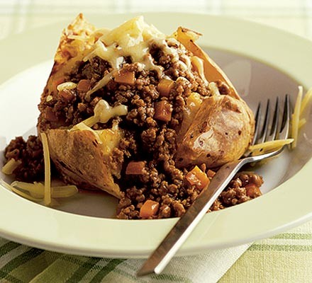

Mince Recipe

Description
Yesterday I didn't what to have for supper but I had beef mince meat and leftover potatoes then I check the app and saw simple recipe we can enjoy me and my mom for dinner.
Ingredients
- 500g beef mince meat
- 2 potatoes
- 1/2 onion
- 1/2 beef stock
- 1 TSP paprika
- 1 chicken cube stock
- 1 tsp rajah
- 1 tsp BBQ
- 1 tsp paprika
- 15 ml cooking oil
- 1 tsp steak and chop spice
- 3 tbs brown onion
Steps
- Chop onion and assure it on canola oil, then followed by beef stock and mince meat. Let it brown a little then add the sauces, tomato, sweet chilli and the marinate then stir and cook.
- Add your mixed vegetables and stir let it cook
- Fetch those boiled leftovers potatoes and peel and diced them and add it to the mince
- Take a cup and mix the soups the vegetable tomato and brown onion in water then pour it over the mince meat
- Your mince stew is cooked ready to be served. Mine is served with rice enjoy